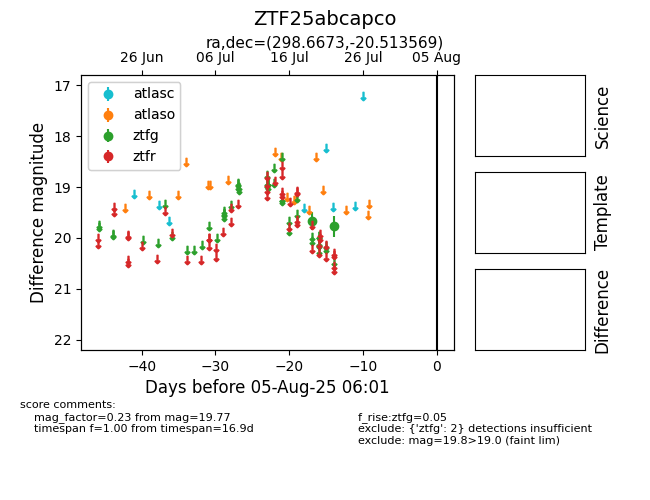

Target ZTF25abcapco at 2025-08-05 06:01, see:
FINK: fink-portal.org/ZTF25abcapco
Lasair: lasair-ztf.lsst.ac.uk/objects/ZTF25abcapco
ALeRCE: alerce.online/object/ZTF25abcapco
alt names
ZTF25abcapco (ztf,fink)
coordinates:
equatorial (ra, dec) = (298.6673,-20.51357)
galactic (l, b) = (20.6894,-22.75923)
photometry
last ztfg=19.77
2 ztfg detections
